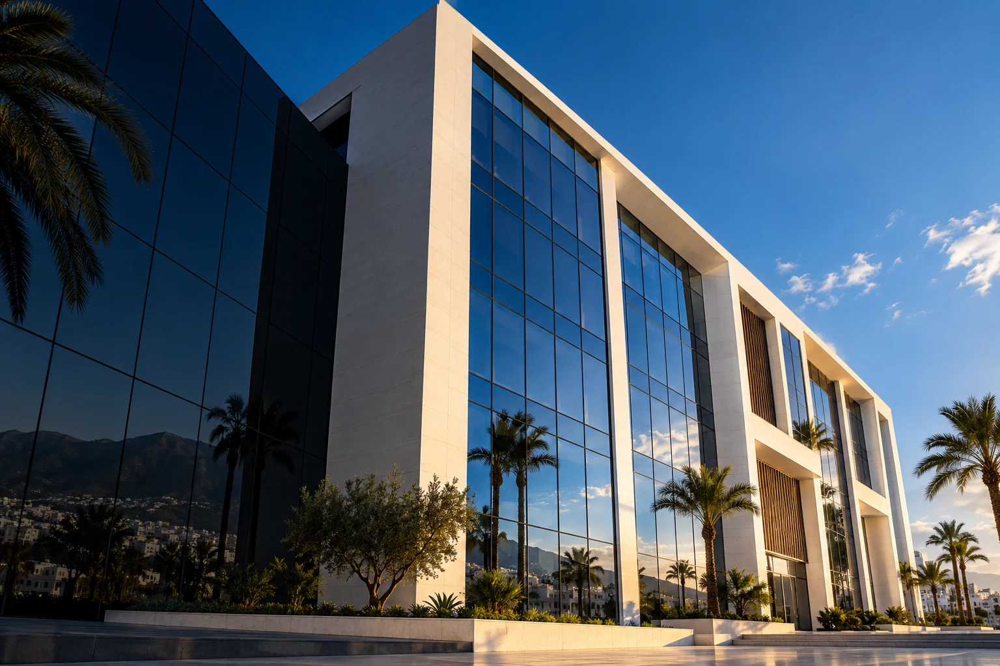
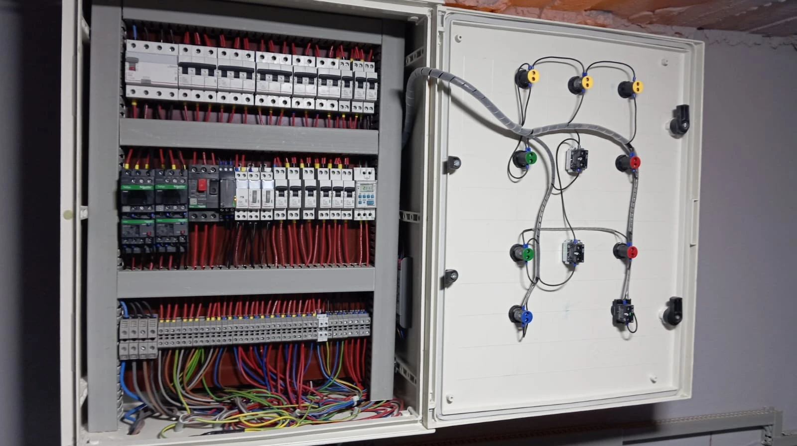

01
Plomberie sanitaire
Des réseaux d’eau fiables, des installations sanitaires soignées et un confort durable.
Découvrir le service
STÉ EP FAYAK SARL
ÉTUDE · RÉALISATION · MAINTENANCE
Des installations pensées pour durer.
Un partenaire engagé, de l’étude à la maintenance.
Chez Sté EP FAYAK SARL, nous accompagnons vos projets d’équipements techniques avec une même exigence : des solutions adaptées, une réalisation soignée et un suivi attentif.
Plomberie, électricité, confort thermique ou énergies renouvelables : nous réunissons les savoir-faire essentiels au bon fonctionnement de vos espaces.
Des réseaux d’eau fiables, des installations sanitaires soignées et un confort durable.
Découvrir le service
Installation, distribution et maintenance de vos équipements électriques.
Découvrir le service
Un confort thermique maîtrisé, de l’installation à la maintenance.
Découvrir le serviceImages d’illustration. Les photographies de nos réalisations seront ajoutées prochainement.


Des compétences complémentaires pour aborder votre projet dans son ensemble.
L’écoute de vos besoins guide nos choix techniques et nos propositions.
Un accompagnement de l’étude à la réalisation, puis à la maintenance.